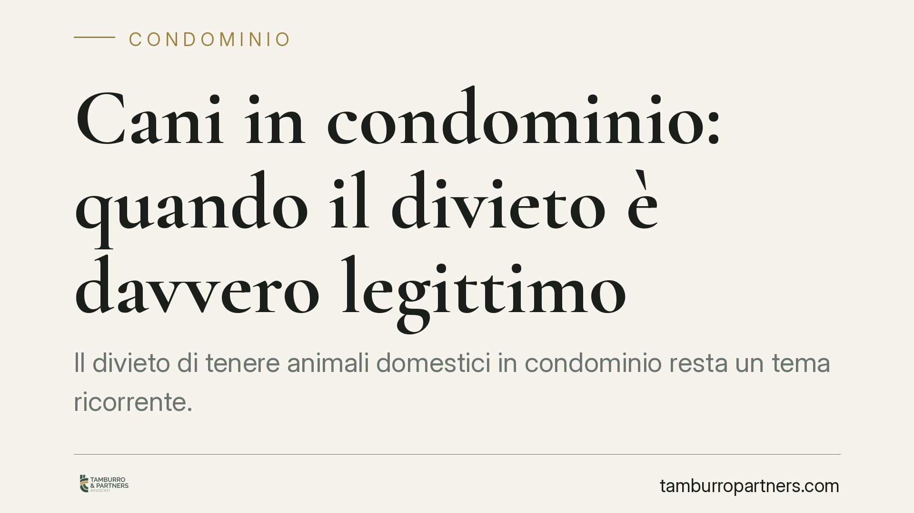

Cani in condominio: quando il divieto è davvero legittimo
Il divieto di tenere animali domestici in condominio resta un tema ricorrente. La linea di confine è netta: nel regolamento approvato dall'assemblea il divieto è nullo per legge, mentre in quello contrattuale accettato al momento dell'acquisto può essere valido e vincolante. La differenza nasce dalla diversa natura dei due atti e ha conseguenze concrete per chi compra e per chi gestisce lo stabile.

Il fatto
Una condomina si è vista contestare la presenza del proprio cane in forza di una clausola del regolamento condominiale. La questione, ricorrente nei tribunali di merito, ruota attorno a un punto preciso: da dove proviene il divieto? La risposta cambia radicalmente l'esito, perché il nostro ordinamento tratta in modo diverso il regolamento assembleare e quello contrattuale.
Inquadramento normativo
Il riferimento è l'art. 1138, comma 5, del Codice civile, introdotto dalla riforma del condominio (legge n. 220/2012). La norma stabilisce che "le norme del regolamento non possono vietare di possedere o detenere animali domestici". La ratio è di tutela: si è inteso riconoscere valore al rapporto tra la persona e l'animale, sottraendolo alla maggioranza assembleare.
La portata del divieto, però, è circoscritta. L'art. 1138 disciplina il regolamento di natura assembleare, cioè approvato a maggioranza dall'assemblea. In quella sede una clausola che vieti gli animali è nulla: l'assemblea non ha il potere di comprimere questo diritto.
Diverso è il regolamento di natura contrattuale. Si tratta di un atto accettato da ciascun proprietario in sede di acquisto, in genere mediante richiamo nel rogito notarile. Qui non opera una decisione a maggioranza, ma il consenso individuale. La giurisprudenza di legittimità ha chiarito che le clausole limitative dei diritti dei singoli, contenute in un regolamento contrattuale, hanno natura negoziale: possono configurarsi come vere e proprie servitù reciproche o oneri reali gravanti sulle unità immobiliari. Non sono semplici regole di convivenza, ma limiti alla proprietà che ciascun acquirente ha accettato. Per questa via, un divieto di detenere animali può risultare legittimo e vincolante.
Implicazioni pratiche
La distinzione non è teorica. Per chi acquista un immobile, significa che una clausola richiamata nel rogito può imporre limiti destinati a durare nel tempo. Per il condominio, significa che la fonte del divieto va individuata con precisione prima di qualsiasi contestazione.
Un profilo spesso trascurato riguarda l'opponibilità ai successivi acquirenti. Perché una clausola contrattuale vincoli anche chi compra dopo, occorre che il regolamento sia richiamato e accettato nei singoli atti di trasferimento oppure trascritto nei registri immobiliari. In assenza di questi passaggi, l'opponibilità al nuovo proprietario può essere contestata, pur rimanendo valido l'obbligo tra i soggetti originari. È un aspetto che incide direttamente sulla possibilità di far valere la clausola.
Resta inoltre lo spazio per verificare come la clausola è formulata. Un conto è un divieto generale e assoluto, un altro è una limitazione circoscritta. La qualificazione concreta dipende dal testo e dalle modalità di accettazione.
Cosa fare in concreto
- Prima di acquistare, richiedere il regolamento condominiale e verificarne la natura: assembleare o contrattuale. Controllare se è richiamato nel preliminare e nel rogito.
- Leggere la clausola per esteso, distinguendo tra divieto assoluto e limitazione parziale, e annotare le modalità di accettazione.
- Verificare l'opponibilità: accertare se il regolamento è stato trascritto o espressamente richiamato nei precedenti atti di trasferimento.
- In caso di contestazione, ricostruire la provenienza del divieto e conservare la documentazione (atto di acquisto, verbali, regolamento). La soluzione dipende da elementi specifici del singolo stabile: un esame tecnico della clausola consente di valutare la fondatezza di eventuali contestazioni.
Un equilibrio tra autonomia e diritti
La materia riflette il bilanciamento tra l'autonomia negoziale dei condomini, liberi di assumere obblighi reciproci in sede di acquisto, e la tutela del diritto a detenere animali, che la legge sottrae invece alle decisioni di maggioranza. Comprendere questa differenza consente di valutare con lucidità sia la validità di una clausola sia la sua effettiva efficacia nei confronti di chi è chiamato a rispettarla.
---
*Nota sul riferimento giurisprudenziale citato in alcune fonti divulgative (Tribunale di Cosenza, Sez. II civile): gli estremi della pronuncia devono essere verificati sui repertori ufficiali prima di qualsiasi utilizzo in sede difensiva. I principi qui esposti si fondano sul dato normativo e sull'orientamento consolidato di legittimità.*
---
Contributo informativo a cura di Tamburro & Partners Avvocati - Avv. Giuseppe Tamburro. Non costituisce parere legale.
Ogni condominio ha una storia a sé.
Se gestisci un'amministrazione e vuoi un confronto su una specifica questione condominiale, scrivi allo studio. Ti rispondiamo entro un giorno lavorativo.